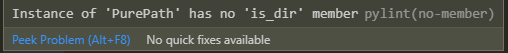

יש לי שגיאה מוזרה שלא מפריעה לריצת תוכנית:

מישהו נתקל בזה?
לא מכיר את השגיאה אבל pylint זה משהו שמותקן עם הvscode בשביל להראות לך טעויות סינטקס.
לכן זה לא מפריע לריצת התוכנית , כנראה שהקוד תקין אך pylint מזהה משהו לא תקין.
זה אומר שאיפשהו ניסית להריץ is_dir על משתנה שהטיפוס שלו הוא PurePath (כנראה השתמשת ב־pathlib.PurePath).
ל־PurePath אין מתודה is_dir, ולכן הודעת השגיאה.
השתמשתי רק ב pathlib.Path ובפועל הקוד רץ ומבצע את מה שאמור לעשות אז די מוזר לי.